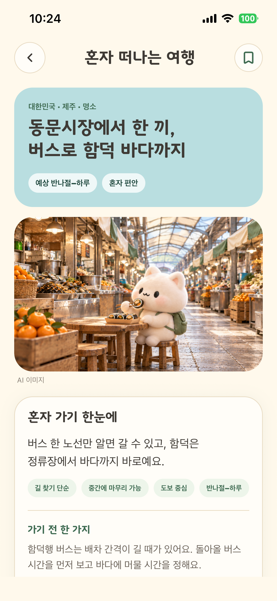
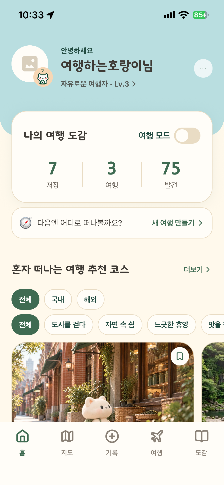
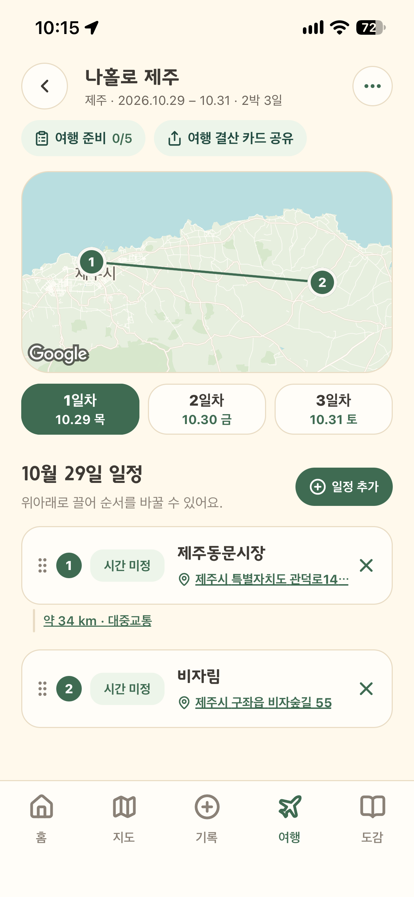
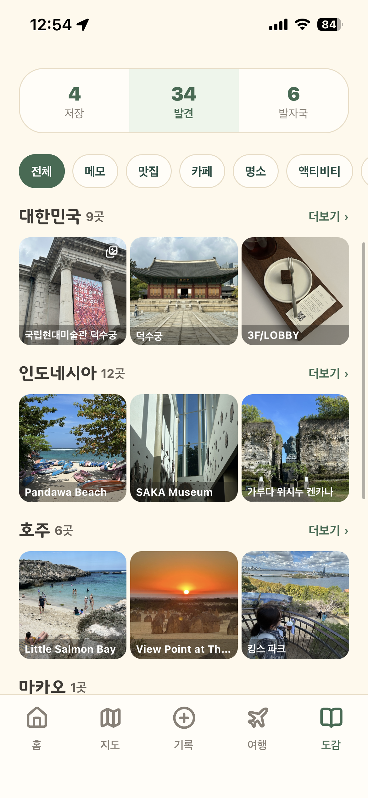

나에게 맞는 곳을 발견해요
나의 여행 스타일을 참고해 장소를 살펴보고,
혼자 여행할 때의 팁도 함께 확인해요.
어디로 갈지 고민하는 순간부터
돌아와 추억을 꺼내 보는 순간까지.
내 속도로 떠나는 여행, 나홀로와 함께해요.
조금 더 자유롭게, 조금 더 나답게.

01 / BEFORE YOU GO
혼자 가도 괜찮을까?
어디부터 시작하면 좋을까?
나에게 맞는 장소부터 차근차근 찾아봐요.

나의 여행 스타일을 참고해 장소를 살펴보고,
혼자 여행할 때의 팁도 함께 확인해요.

지금 끌리는 장소는 나만의 폴더에 저장해요.
언젠가 떠날 여행의 시작이 되어줄 거예요.

저장한 장소를 이어 나만의 여정을 만들어요.
빼곡한 계획보다 나에게 편한 하루로.

02 / AFTER EVERY JOURNEY
발길이 닿은 장소, 우연히 만난 풍경,
다시 기억하고 싶은 작은 순간까지.
사진과 후기로 남긴 기록이 여행도감에 쌓이고,
새로운 지역과 다양한 경험을 만날수록
나의 여행자 이야기도 함께 성장해요.
ALWAYS YOUR JOURNEY
같은 계정으로 로그인하면 다른 기기에서도 기록을 이어갈 수 있어요.
나만 보고 싶은 순간은 개인 기록으로, 나누고 싶은 발견은 공개로 남겨요.
SEE YOU SOON
혼자 떠나는 모든 순간을 위한 가이드
정식 출시 후 이곳에서 App Store 다운로드를 안내할게요.
나홀로에 문의하기